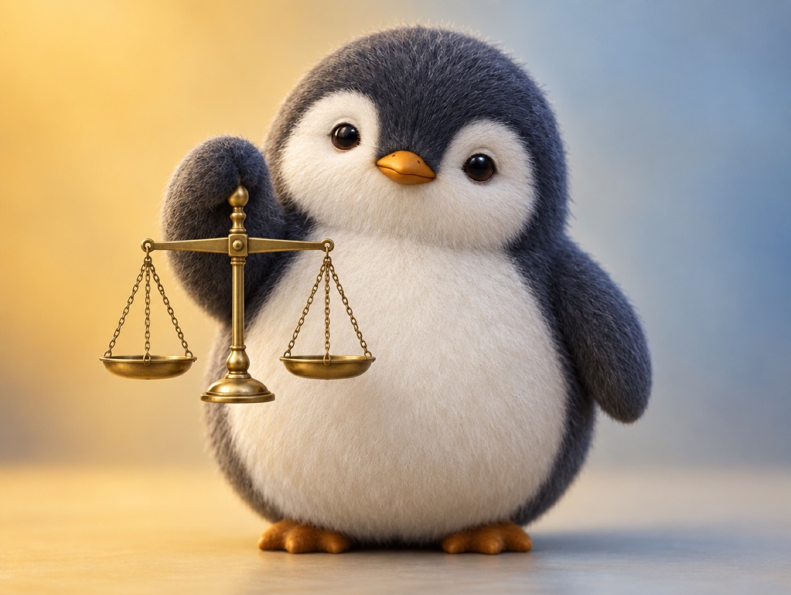

📝 DRAFT · 下書き — まだ本番に出していません · 下書き一覧
🐧 EVERYDAY LIFE⚡ 15 SEC
Praise 3 times for every 1 criticism, and you are an honest person ⚖️

Too Much Criticism
If you criticize a lot, people around you think, "Maybe they talk about me behind my back, too."
Not Zero
But it seems you do not have to make criticism zero.
⚡ TRY IT
The praise and criticism scale
1 🪨 weighs the same as 3 💛.
💛 Praise
0
🪨 Criticism
0
Put praise and criticism on the scale.
🍬 All sweet! (A little honesty is OK, too.)
⚖️ Just right, 3 : 1! "An honest person."
🏅 Honest and kind!
😬 A little harsh. Add some praise.
😱 Scary… "Maybe they talk about me, too."
3 To 1
If you praise 3 times for every 1 criticism, people see you as "an honest person."
📚 I learned this from the Japanese blog "Panda no Ondo".